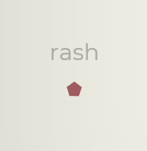
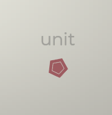

主武器
主武器是《指尖疾速》中的初始武器，在遊戲中扮演最關鍵的角色。當你成功拼寫出敵人身上的一個單詞時，主武器將會鎖定該敵人。每種主武器皆具備獨特的效果與機制，需要你採取不同策略才能發揮其最大潛能。
有些主武器著重於打字速度（WPM），而有些則講究戰術運用。與遊戲內其他類型的武器相同，主武器也能透過升級與進化來強化能力，讓你的戰鬥效率隨著遊戲的進展逐步提升。
主武器是《指尖疾速》中的初始武器，在遊戲中扮演最關鍵的角色。當你成功拼寫出敵人身上的一個單詞時，主武器將會鎖定該敵人。每種主武器皆具備獨特的效果與機制，需要你採取不同策略才能發揮其最大潛能。
有些主武器著重於打字速度（WPM），而有些則講究戰術運用。與遊戲內其他類型的武器相同，主武器也能透過升級與進化來強化能力，讓你的戰鬥效率隨著遊戲的進展逐步提升。
標籤: 動能, 主要
透過極短時間內爆發式射擊來殲滅敵人的武器。
名稱 |
描述 |
|---|---|
| 霜咬 | 效果： 冰凍傷害：+10 冰凍機率：3% 影響基礎傷害，並受到冰凍傷害係數影響。 |
| 霜咬II | 效果： 冰凍傷害：+20 動能傷害：-10 影響基礎傷害。 |
| 反彈 | 效果： 投擲物連鎖：3 連發槍的投擲物會反彈到附近的目標上，第一次命中後，後續造成50%傷害。 |
| 反彈II | 效果： 投擲物連鎖：+2 |
| 霰彈槍 | 效果： 投擲物計數：+5 投擲物擴散：+400% 動能傷害：-10 連發槍會發射擴散範圍更廣但威力較低的投擲物，傷害係數影響基礎傷害。 |
| 霰彈槍II | 效果： 投擲物計數：+5 投擲物擴散：+100% |
| 爆炸彈頭 | 效果： 爆炸傷害：+10 動能傷害：-10 影響基礎傷害。連發槍將裝填爆炸子彈，對小範圍內的目標造成爆炸傷害。 |
| 爆炸彈頭II | 效果： 爆炸傷害：+15 動能傷害：-10 稍微擴大連發槍子彈的影響範圍。 |
名稱 |
描述 |
|---|---|
| 增強學習 | 進化：+10擊殺 |
| 戰鬥數據 | 進化：+20擊殺 |
| 專業護援 | 進化：+30擊殺 |
| 全金屬外殼 | 傷害：+10% |
| 穿甲升級 | 傷害：+20% |
| 穿刺者增強 | 傷害：+30% |
| 進階定位 | 暴擊率：+1% 暴擊傷害：+50% |
| 精確導引系統 | 暴擊率：+2% 暴擊傷害：+100% |
| 鷹眼整合 | 暴擊率：+3% 暴擊傷害：+200% |
| 載荷提升 | 攻擊範圍：+25% |
標籤: 高溫, 主要, 持續傷害
可發射高精度聚焦光束，對敵人造成持續傷害。
名稱 |
描述 |
|---|---|
| 冰凍射線 | 效果： 高溫傷害：-25 冰凍傷害：+25 冰凍機率：8% 影響基礎傷害。高溫射線的傷害類型將轉變為冰凍傷害，並提升對敵人施加冰凍效果的機率。 |
| 冰凍射線II | 效果： 冰凍傷害：+20 影響基礎傷害。 |
| 反射 | 高溫射線可穿透敵人，並在螢幕邊緣反射2x。 |
| 反射II | 高溫射線可在螢幕邊緣反射4x。 |
| 雙刃 | 同時朝反方向發射光束，所有進化與升級效果皆適用於兩個方向的光束。 |
| 爆破手 | 效果： 射速：+500% 高溫射線將不再發射持續的光束，而是轉為發射獨立的雷射光束，能同時攻擊多個目標。不過，該武器仍被歸類為持續傷害類武器。 |
| 爆破手II | 效果： 光束長度：+100% 傷害：+40% |
名稱 |
描述 |
|---|---|
| 融核 | 進化：+10擊殺 |
| 原初之火 | 進化：+20擊殺 |
| 滅燼 | 進化：+30擊殺 |
| 熊熊烈火 | 傷害：+10% |
| 極炙高溫 | 傷害：+20% |
| 滅世爆發 | 傷害：+30% |
| 匯聚 | 光束寬度：+20% （攻擊範圍） |
| 輻射 | 光束寬度：+40% （攻擊範圍） |
| 聚光 | 光束寬度：+60% （攻擊範圍） |
| 快速引燃 | 射速：+10% |
| 疾速烈火 | 射速：+20% |
| 煉獄狂潮 | 射速：+30% |
標籤: 爆炸, 主要
發射導彈群轟炸目標及其周圍；隨時間充能。
名稱 |
描述 |
|---|---|
| 火箭陣列 | 火力網將根據每個彈藥條發射3 - 6，而非基於2 - 5。 |
| 火箭陣列II | 火力網將根據每個彈藥條發射4 - 7，而非基於3 - 6。 |
| 山搖地動 | 接下來的數秒內，導彈將被部署至地底，而非直接引爆並生成強大的爆炸衝擊波。 |
| 山搖地動II | 效果： 攻擊範圍：+25% 持續時間：+25% |
| 重新供給 | 當前戰場將生成供給拾取道具。啟動這些拾取道具會自動裝填你的主武器，並讓下一次攻擊的傷害提升30%。 |
| 重新供給II | 供給拾取道具會讓下一次攻擊的爆炸範圍30%。 |
名稱 |
描述 |
|---|---|
| 頂尖火力網 | 進化：+10 |
| 終極包圍 | 進化：+20 |
| 死神的披風 | 進化：+30 |
| 衝擊爆發 | 傷害：+10% |
| 毀滅一擊 | 傷害：+20% |
| 滅世爆裂 | 傷害：+30% |
| 延展侵蝕 | 攻擊範圍：+10% |
| 遠距離載荷 | 攻擊範圍：+20% |
| 全方位突擊 | 攻擊範圍：+30% |
| 快速換彈 | 裝填速度：+10% （射速） |
| 快速供給 | 裝填速度：+20% （射速） |
| 極速充能 | 裝填速度：+30% （射速） |
標籤: 化學, 主要, 持續傷害
發射黏球限制敵人行動並對其造成傷害。
名稱 |
描述 |
|---|---|
| 史萊姆泡泡 | 在濺射區域內生成史萊姆泡泡拾取道具。 啟動後，史萊姆泡泡將會爆炸，對周圍小範圍內的敵人造成傷害並產生額外的濺射區域。 |
| 史萊姆泡泡II | 提升史萊姆泡泡的生成機率。 當泡泡失效時，有50%的機率自動爆炸。 |
| 感染 | 濺射射擊效果： 施加狀態效果機率：+5% 全局效果： 狀態效果傷害：+30% |
| 感染II | 被狀態效果擊殺的敵人會爆炸並生成濺射區域。 |
| 岩漿 | 效果： 化學傷害：-100% 高溫傷害：+40 影響基礎傷害。濺射射擊的傷害類型轉變為高溫傷害。 |
| 岩漿II | 效果： 高溫傷害：+20 影響基礎傷害。 |
| 致病 | 濺射區域效果： 持續時間：-50% 濺射區域的範圍會隨時間不斷擴大。 |
名稱 |
描述 |
|---|---|
| 高效施毒 | 進化：+10 |
| 神秘危毒 | 進化：+20 |
| 瘟疫召喚者 | 進化：+30 |
| 劇毒濺射 | 傷害：+10% |
| 猛毒爆發 | 傷害：+20% |
| 末世災雲 | 傷害：+30% |
| 彌留毒霧 | 攻擊範圍：10% |
| 神經毒素 | 攻擊範圍：20% |
| 平流層空洞 | 攻擊範圍：30% |
| 緩慢消散 | 持續時間：10% |
| 半衰期延長 | 持續時間：20% |
| 無盡輻射 | 持續時間：30% |
在一輪挑戰過程中，當你的等級提升時，你將獲得升級武器。一旦選擇這種武器，它便會加入你的武器庫。每種武器皆有其獨特的啟動方式，但大多數都能透過打字來觸發，並以主武器進行瞄準。
你最多可透過這種方式來獲得4個武器。武器一旦加入武器庫，便可在升級池中獲得升級選項，並強化其能力。
標籤: 動能, 無人機
完成包含特定字母的單詞 a, e, o 生成高速近距離無人機，其數量等同於上方匹配數。
名稱 |
描述 |
|---|---|
| 超級充能 | 每次生成的第20個幽靈將成為超級幽靈。 超級幽靈： +100%傷害 +50%持續時間 +50%速度 |
| 自毀 | 效果： 爆炸傷害：+50 幽靈消失時將自毀並造成爆炸傷害，影響基礎傷害，並受到爆炸傷害係數影響。 |
| 自毀II | 效果： 爆炸傷害：+50 攻擊範圍：+30% 影響基礎傷害。 |
| 揮發性燃料 | 效果： 速度：+50% |
| 揮發性燃料II | 效果： 速度：50% 持續時間：-25% |
名稱 |
描述 |
|---|---|
| 幽靈式學習 | 進化：+10擊殺 |
| 幽靈專長 | 進化：+20擊殺 |
| 鏡花水月 | 進化：+30擊殺 |
| 蜂群戰術 | 傷害：+10% |
| 座標打擊 | 傷害：+20% |
| 蜂巢思維 | 傷害：+30% |
| 銠電池 | 持續時間：+10% |
| 高能電池 | 持續時間：+20% |
| 能量核心超載 | 持續時間：+30% |
| 自我組裝 | 完成由7個以上字母拼寫的單詞，將會額外生成一個幽靈。 |
標籤: 高溫, 砲塔
部署自動砲塔，攻擊範圍內的敵人。
名稱 |
描述 |
|---|---|
| 防禦網格 | 效果： 砲塔+1 |
| 堅固核心 | 效果： 動能傷害：+10 流血機率：3% 影響基礎傷害，並受到動能傷害係數影響。 |
| 堅固核心II | 效果： 動能傷害：+20 高溫傷害：-10 影響基礎傷害。 |
| 緊急情況協議 | 當一個護盾增強器被摧毀時，哨兵將進入緊急情況協議模式，持續10秒。 緊急情況協議生效時： 攻擊範圍：+50% 射速：+100% |
| 緊急情況協議 | 緊急情況協議生效時： 傷害：+50% 旋轉速度：{3} |
名稱 |
描述 |
|---|---|
| 敏銳的觀察者 | 進化：+10擊殺 |
| 機警哨兵 | 進化：+20擊殺 |
| 永恆守望者 | 進化：+30擊殺 |
| 一觸即發 | 射速：+10% |
| 疾速開火 | 射速：+20% |
| 閃電協議 | 射速：+30% |
| 穿甲彈夾 | 傷害：+10% |
| 戰術裝甲粉碎者 | 傷害：+20% |
| 外部穿透武器 | 傷害：+30% |
| 倍數瞄準鏡 | 攻擊範圍：+10% |
| 增強瞄準鏡 | 攻擊範圍：+20% |
| 精確瞄準系統 | 攻擊範圍：+30% |
標籤: 電擊, 砲塔, 持續傷害
完成以特定字字母開頭的單詞 b, c, d, e 部署電磁砲塔，對敵人造成持續傷害。
名稱 |
描述 |
|---|---|
| 線圈束 | 除了現有的字母外，額外生成一個特斯拉地雷。 |
| 電流灼燒 | 效果： 高溫傷害：+4 點燃機率：3% 影響基礎傷害，並受到高溫傷害係數影響。 |
| 電流灼燒II | 效果： 高溫傷害：+8 電擊傷害：-4 影響基礎傷害。 |
| 限制區域 | 位於特斯拉地雷範圍內的敵人受到電擊傷害時，被禁錮的機率提升20%。 |
| 限制區域II | 禁錮傷害提升5，攻擊範圍提升30%。該效果適用於任何來源的禁錮傷害，並影響基礎傷害。 |
名稱 |
描述 |
|---|---|
| 傳導大師 | 進化：+10擊殺 |
| 伏特工藝 | 進化：+20擊殺 |
| 放大域石 | 進化：+30擊殺 |
| 強化線圈 | 持續時間：+10% |
| 強韌導體 | 持續時間：+20% |
| 超電荷感應 | 持續時間：+30% |
| 超載 | 傷害：+10% |
| 電能激盪 | 傷害：+20% |
| 雷霆萬鈞 | 傷害：+30% |
| 擴展領域 | 攻擊範圍：+10% |
| 地平線之繫 | 攻擊範圍：+20% |
| 無限域石 | 攻擊範圍：+30% |
| 靜態湧動 | 禁錮機率：+1% |
| 黑暗傳導 | 禁錮機率：+3% |
| 電能超載 | 禁錮機率：+5% |
標籤: 高溫, 遠距離
對你最近攻擊過的目標發射振盪粒子流。
名稱 |
描述 |
|---|---|
| 雙頭 | 朝反方向額外發射一道振盪器投擲物。 |
| 球狀閃電 | 效果： 電擊傷害：+3 禁錮機率：3% 影響基礎傷害，並受到電擊傷害係數影響。 |
| 球狀閃電II | 效果： 電擊傷害：+6 高溫傷害：-3 影響基礎傷害。 |
| 穩定電漿 | 振盪器投擲物會穿透敵人，擊中首個敵人後，將造成50%傷害。 |
| 穩定電漿II | 點燃傷害提升5，該效果適用於任何來源的點燃傷害，並影響基礎傷害。 |
名稱 |
描述 |
|---|---|
| 精密諧波 | 進化：+10擊殺 |
| 自適應共振器 | 進化：+20擊殺 |
| 浪潮 | 進化：+30擊殺 |
| 電漿引燃 | 傷害：+10% |
| 量子釋放 | 傷害：+20% |
| 新星爆發 | 傷害：+30% |
| 地毯式轟炸 | 擴散：+10% |
| 地球之眼 | 擴散：+20% |
| 量子擴張 | 擴散：+30% |
| 會心 | 暴擊率：+1% 暴擊係數：+50% |
| 彈無虛發 | 暴擊率：+2% 暴擊係數：+100% |
| 量子狂潮 | 暴擊率：+3% 暴擊係數：+200% |
標籤: 爆炸, 遠距離
週期性在隨機地點生成目標指示器，指示器啟動後將會發動軌道轟炸。
名稱 |
描述 |
|---|---|
| 監管者 | 彗星獲得的目標選項由一個增加至兩個。 |
| 監管者II | 彗星獲得的目標選項由兩個增加至三個。 |
| 冰雨 | 效果： 爆炸傷害：+25 冰凍機率：5% 影響基礎傷害，並受到冰凍傷害係數影響。 |
| 冰雨II | 效果： 冰凍傷害：+20 冰凍機率：+5% |
| 不休 | 效果： 攻擊範圍：-50% 射速：-50% 彗星將會朝你上一個目標的位置不斷來襲。 |
| 不休II | 效果： 速度：+50% 暴擊率：+10% |
名稱 |
描述 |
|---|---|
| 銳利視野 | 進化：+10擊殺 |
| 軌道視野 | 進化：+20擊殺 |
| 菁英偵察兵 | 進化：+30擊殺 |
| 精準轟炸 | 傷害：+10% |
| 衝擊增強 | 傷害：+20% |
| 天啟 | 傷害：+30% |
| 傳遞加速 | 生成速率：+10% |
| 序列啟動 | 生成速率：+20% |
| 死亡之雨 | 生成速率：+30% |
| 遠射模組 | 攻擊範圍：+10% |
| 擴大陣列 | 攻擊範圍：+20% |
| 滅世之蝕 | 攻擊範圍：+30% |
標籤: 電擊, 無人機, 持續傷害
完成包含特定字母的單詞 i, o, u 生成電擊射線無人機，其數量等同於上方匹配數。
名稱 |
描述 |
|---|---|
| 菁英獵手 | 每次生成的第12個獵手將成為菁英獵手。 菁英獵手： +100%傷害 +50%持續時間 +50%速度 +50%攻擊範圍 |
| 電能鏢 | 效果： 動能傷害：+5 流血機率：3% 獵手會發射投擲物而非電流。影響基礎傷害，並受到動能傷害係數影響。 |
| 電能鏢II | 效果： 動能傷害：+10 電擊傷害：-5 影響基礎傷害。 |
| 閃電鏈 | 獵手的攻擊會額外攻擊附近的1個敵人。 |
| 閃電鏈II | 獵手的攻擊會額外攻擊附近的2個敵人。 |
名稱 |
描述 |
|---|---|
| 慧眼 | 進化：+10擊殺 |
| 動態精準 | 進化：+20擊殺 |
| 捕獵者 | 進化：+30擊殺 |
| 電浪 | 傷害：+10% |
| 嚎哮者 | 傷害：+20% |
| 量子超載 | 傷害：+30% |
| 聚焦光束 | 攻擊範圍：+10% |
| 定向釋放 | 攻擊範圍：+20% |
| 雷瀑 | 攻擊範圍：+30% |
| 高效能源利用 | 持續時間：+10% |
| 破壞式完善 | 持續時間：+20% |
| 恆久矩陣 | 持續時間：+30% |
標籤: 動能, 遠距離
生成巨大旋轉飛刃，並使其附加至主武器的攻擊上。飛刃會抵達螢幕邊緣，並對沿途所有敵人造成傷害。
名稱 |
描述 |
|---|---|
| 雙持 | 效果： 屠夫數量+1 |
| 烈火刀 | 效果： 高溫傷害：+7 點燃機率：+3% 影響基礎傷害，並受到高溫傷害係數影響。 |
| 烈火刀II | 效果： 高溫傷害：+14 動能傷害：-7 影響基礎傷害。 |
| 迴旋鏢 | 屠夫在抵達螢幕邊緣後，將返回主武器處。 |
| 迴旋鏢II | 效果： 速度：+75% 射速：+50% |
| 浴血 | 效果： 對流血狀態敵人的傷害： +10% 處於流血狀態的敵人若被屠夫擊殺，有10%機率在一段時間內觸發全場雙倍傷害效果。 |
| 浴血II | 效果： 對流血狀態敵人的傷害： +25% 對25%造成雙倍傷害的機率提升。 |
| 鋸齒發射器 | 效果： 流血機率： +7% 流血傷害： +25% 連發槍流血機率： +7% 使用兩把高攻速鋸齒刃取代屠夫，對錐形範圍內的目標造成傷害。 |
| 鋸齒發射器II | 效果： 流血機率： +12% 流血傷害： +50% 連發槍流血機率： +12% 額外發射2把鋸齒刃。 |
名稱 |
描述 |
|---|---|
| 絞肉機 | 進化：+10擊殺 |
| 傷疤收集者 | 進化：+20擊殺 |
| 斷頭台 | 進化：+30擊殺 |
| 銳利邊緣 | 傷害：+10% |
| 蟬翼之刃 | 傷害：+20% |
| 剃刀之刃 | 傷害：+30% |
| 旋翼增強 | 旋轉速率：+10% |
| 渦輪增壓 | 旋轉速率：+20% |
| 超光速引擎旋翼 | 旋轉速率：+30% |
| 長刃 | 攻擊範圍：+10% |
| 延展侵蝕 | 攻擊範圍：+20% |
| 延展神妙 | 攻擊範圍：+30% |
| 鋒利剃刀 | 流血機率：+1% |
| 放血 | 流血機率：+3% |
| 血流如注 | 流血機率：+5% |
標籤: 爆炸, 無人機
完成以特定字字母開頭的單詞 f, g, h, i 生成緩慢移動的地雷，一接觸敵人就會爆炸。
名稱 |
描述 |
|---|---|
| 地雷部署者 | 除了現有的字母外，額外生成地雷。 |
| 注入 | 效果： 化學傷害：+20 瘟疫機率：10% 影響基礎傷害，並受到化學傷害係數影響。 |
| 注入II | 效果： 瘟疫機率：+10% 爆炸傷害：-50 影響基礎傷害。 |
| 獵手追蹤者 | 效果： 速度：+200% 攻擊範圍：-50% 地雷會自動追蹤隨機目標。 |
| 獵手追蹤者II | 效果： 生成地雷：+1 速度：+100% |
| 髒彈 | 效果： 化學傷害：+5 濺射槍傷害: +10% 地雷爆炸時將生成3坨黏球。 |
| 髒彈II | 效果： 化學傷害：+5 濺射槍傷害: +10% 移動期間，地雷將定期發射一坨黏球。 |
| 回歸地雷 | 主砲塔將依據【地雷陣】的地雷數量定期生成新地雷（數值向下取整）。生成速率受【地雷陣】的射速影響。 |
| 回歸地雷II | 回歸地雷的生成速度提升30%，並額外生成1枚地雷。 |
名稱 |
描述 |
|---|---|
| AI起爆器 | 進化：+10擊殺 |
| 精準彈道學 | 進化：+20擊殺 |
| 毀滅者 | 進化：+30擊殺 |
| 載荷增強裝置 | 傷害：+10% |
| 重砲 | 傷害：+20% |
| 彈頭增大 | 傷害：+30% |
| 範圍擴張 | 攻擊範圍：+10% |
| 戰場覆蓋 | 攻擊範圍：+20% |
| 無邊領域 | 攻擊範圍：+30% |
| 快速製造者 | 生成地雷+1 |
| 回饋循環 | 回歸地雷： 生成速率：+20% （射速） |
| 天瀑協議 | 回歸地雷： 生成速率：+30% （射速） |
標籤: 動能, 砲塔
完成以特定字字母開頭的單詞 j, k, l, m 部署一個四向的輪輻式刀刃陷阱。
名稱 |
描述 |
|---|---|
| 利刃貯藏 | 除了現有的字母外，額外生成一個利刃陷阱。 |
| 劇毒外衣 | 效果： 化學傷害：+5 瘟疫機率：10% 影響基礎傷害，並受到化學傷害係數影響。 |
| 劇毒外衣II | 效果： 化學傷害：+5 瘟疫機率：+5% 影響基礎傷害。 |
| 鏈鋸刃 | 利刃陷阱的流血機率將額外加上其暴擊機率。 |
| 鏈鋸刃II | 流血傷害提升5，該效果適用於任何來源的流血傷害，並影響基礎傷害。 |
名稱 |
描述 |
|---|---|
| 改良陷阱 | 進化：+10擊殺 |
| 反應漩渦 | 進化：+20擊殺 |
| 撕裂者 | 進化：+30擊殺 |
| 堅固切割者 | 傷害：+10% |
| 鈦合金切割者 | 傷害：+20% |
| 鑽石切割者 | 傷害：+30% |
| 已潤滑部件 | 旋轉速率：+10% |
| 精準部件 | 旋轉速率：+20% |
| 量子部件箱 | 旋轉速率：+30% |
| 改良發條裝置 | 持續時間：+10% |
| 無暇發條裝置 | 持續時間：+20% |
| 銠充能裝置 | 持續時間：+30% |
標籤: 化學, 遠距離
完成以特定字字母開頭的單詞 n, o, p, q 部署一顆繞著主武器飛行的球體，對其路徑上的所有目標造成傷害。
名稱 |
描述 |
|---|---|
| 連續統一體 | 除了現有的字母外，額外生成一個環遊者。 |
| 風暴之環 | 效果： 化學傷害： +70 電擊傷害： -70 影響基礎傷害，並受到電擊傷害係數影響。 |
| 風暴之環II | 效果： 電擊傷害：+20 禁錮機率： +5% 影響基礎傷害。 |
| 分身 | 生成一個運行軌跡相反的環遊者。 |
| 拴繩 | 現在環遊者將被繩子緊緊拴在主武器上，繩子將對其掃過的敵人造成等同於環遊者傷害30%的傷害。 |
| 拴繩II | 繩子將對其掃過的敵人造成等同於環遊者傷害{2}的傷害。 |
名稱 |
描述 |
|---|---|
| 螺旋上升 | 進化：+10 |
| 循環智慧 | 進化：+20 |
| 思維循環 | 進化：+30 |
| 螺旋尖矛 | 傷害：+10% |
| 動能核心 | 傷害：+20% |
| 近日點 | 傷害：+30% |
| 向量之環 | 攻擊範圍：+10% |
| 軌道延展器 | 攻擊範圍：+20% |
| 輻散 | 攻擊範圍：+30% |
| 旋轉平衡器 | 持續時間：+10% |
| 節奏錨定器 | 持續時間：+20% |
| 接續 | 持續時間：+30% |
| 脈衝引擎 | 速度：+10% |
| 大地驅動 | 速度：+20% |
| 造渦者 | 速度：+30% |
標籤: 高溫, 無人機
立即部署一架會對敵人發射雷射光束的無人機；啟動燃料拾取道具來為守衛補充燃料。這個操作會消耗燃料，而且燃料耗盡時將進入休眠狀態。
名稱 |
描述 |
|---|---|
| 毒性守衛 | 效果： 高溫傷害：-20 化學傷害：+20 影響基礎傷害。守衛的傷害類型將轉變為化學傷害。 |
| 毒性守衛II | 效果： 化學傷害：+15 影響基礎傷害。 |
| 實驗性燃料 | 特殊的燃料拾取道具將為守衛提供暫時的加成效果，但加成效果只能生效其中一種。 |
| 實驗性燃料II | 所有特殊的燃料拾取道具加成+50%，加成持續時間+50%。 |
| 守衛小隊 | 效果： 傷害：-25% 無人機：+1 守衛數量由一架無人機增加至兩架。 |
| 守衛小隊II | 效果： 傷害：-25% 無人機：+1 守衛數量由兩架無人機增加至三架。 |
名稱 |
描述 |
|---|---|
| 永恆哨兵 | 進化：+10 |
| 無上保衛者 | 進化：+20 |
| 登神之盾 | 進化：+30 |
| 先鋒衝擊 | 傷害：+10% |
| 守護者之怒 | 傷害：+20% |
| 哨兵之怒 | 傷害：+30% |
| 神射手透鏡 | 攻擊範圍：+10% |
| 遠射增強 | 攻擊範圍：+20% |
| 觀察者之明悟 | 攻擊範圍：+30% |
| 不屈之身 | 持續時間：+10% |
| 永恆餘燼 | 持續時間：+20% |
| 不滅之火 | 持續時間：+30% |
| 雷霆反射 | 速度：+10% |
| 迅捷守衛 | 速度：+20% |
| 快速警戒 | 速度：+30% |
在《指尖疾速》中，敵人是程式基於一項內部衡量標準——威脅度來生成的，並且威脅度將會隨著遊戲進行而提升。在試煉模式下，威脅度取決於當前試煉等級的倍率，每提升一級，遊戲就會變得更加困難。而在無盡模式中，威脅度會根據玩家等級以及自適應浮動系統進行調整，數值越高，難度也就越高。
敵人分為特殊敵人和菁英敵人兩種，每種類型的敵人皆有其生成速率的上限，並受總體威脅度等級的限制。
無人機是一種會無止境地朝你的主武器發動攻擊的敵人。它們偶爾會以兩種強化形態出現：
體積增大：生命值為原本的三倍，更難擊破。
速度提升：移動速度為原本的兩倍，不趕快解決它們的話後果不堪設想。
| 圖像 | 描述 |
|---|---|
 |
生命值: 120 傷害: 40 |
 |
生命值: 900 傷害: 60 |
 |
生命值: 750 傷害: 90 |
 |
生命值: 1500 傷害: 120 |
 |
生命值: 2700 傷害: 150 |
 |
生命值: 4800 傷害: 180 |
 |
生命值: 8700 傷害: 210 |
護盾無人機是一種特殊的無人機，擁有可再生的護盾。它擁有額外的護盾條：護盾條位於生命值條的上方，如果在一段時間內未承受傷害，護盾將會恢復。
| 圖像 | 描述 |
|---|---|
|  | 生命值: 150 護盾: 200 傷害: 50 |
 |
生命值: 300 護盾: 400 傷害: 100 |
 |
生命值: 600 護盾: 800 傷害: 150 |
|  | 生命值: 1200 護盾: 1600 傷害: 200 |
 |
生命值: 3600 護盾: 4800 傷害: 250 |
追蹤者是一種特殊的無人機，剛進入戰場時，其單詞大部分內容皆為隱藏狀態。隨著你的拼寫，剩餘的部分才會逐漸顯現，需要你謹慎並快速地應對。
| 圖像 | 描述 |
|---|---|
 |
生命值: 600 傷害: 80 |
 |
生命值: 1200 傷害: 120 |
 |
生命值: 2400 傷害: 160 |
 |
生命值: 7200 傷害: 200 |
詭槍手會逗留在關卡邊緣，不斷朝你的主武器發射堅固的投擲物，直至它被消滅為止。
| 圖像 | 描述 |
|---|---|
 |
生命值: 450 傷害: 25 |
 |
生命值: 900 傷害: 25 |
 |
生命值: 1800 傷害: 25 |
 |
生命值: 3600 傷害: 25 |
 |
生命值: 10800 傷害: 25 |
分裂者初剛進入戰場時看似很容易應對，但它實則由多個部分組成。一旦其中一部分被摧毀，其結構完整性便會崩潰，進而分裂成多個獨立的敵人。
| 圖像 | 描述 |
|---|---|
 |
分裂碎片數量: 4 分裂碎片生命值: 525 分裂碎片傷害: 40 |
 |
分裂碎片數量: 5 分裂碎片生命值: 750 分裂碎片傷害: 40 |
 |
分裂碎片數量: 6 分裂碎片生命值: 975 分裂碎片傷害: 40 |
看守者是遊戲後期出現的精英敵人，擁有環繞自身旋轉的護盾，能抵擋來自護盾面向方向的攻擊。此外，看守者在場時將會為周圍的敵人施加保護性光環，使其進入無敵狀態，直到看守者被消滅為止。
| 圖像 | 描述 |
|---|---|
 |
生命值: 450 |
群聚者是一種精英敵人，會定期號令大批低階敵人向你的主武器發起猛攻，直到自身被消滅為止。
| 圖像 | 描述 |
|---|---|
 |
生命值: 3000 |
在挑戰過程中，當你成功開啟一個寶箱時，你將會獲得戰利品道具。在隨機彈出的戰利品選擇畫面中，你可以挑選一個擁有被動增益效果的道具，並在接下來的戰鬥中享受它的能力。
戰利品道具依照品質分為普通、優質和稀有三種。品質的高低決定了它們出現在戰利品選擇畫面中的機率。在試煉模式中，擊敗一個Boss便能獲得一個寶箱，其中包含稀有品質的道具。
名稱 |
描述 |
|---|---|
| 先知 | 若在升級、進化或獲得戰利品時沒有重新隨機選擇次數，你將自動獲得1次重新隨機選擇機會。 |
| 應急配備 | 生成無人機：35% 所有無人機類武器： 持續時間： |
| 劫掠 | 戰利品選項+1 |
| 多重目標 | 你每擁有一個武器，所有遠距離類武器+1%暴擊率。 |
| 巨型磁鐵 | 當拾取道具即將消失時，你有50%機率將其自動拾取。 |
| 霜蝕 | 被冰凍的敵人將受到持續傷害。 |
| 屍體爆炸 | 當一名敵人被爆炸類暴擊傷害消滅時，將在其周圍引發連鎖爆炸。 |
| 獎勵 | 當一名敵人被暴擊傷害消滅時，30%機率生成重新隨機選擇/護 |
| 餘震 | 暴擊傷害可施加狀態效果。 |
| 吸血驚情 | 獲得等同於5%動能傷害的生命值。 |
| 智慧 | 在拾取護盾道具時，所有武器進化的進度額外增加10個擊殺數。 |
| 佞臣 | 在拾取重新隨機選擇道具時，對螢幕上的所有敵人造成0至100之間的隨機傷害。 |
| 堅毅不倒 | 當護盾被摧毀時，有30%機率獲得雙倍傷害道具。 |
| 三倍傷害 | 在雙倍傷害效果持續期間，每個生成的雙倍傷害道具將轉變為三倍傷害道具。 |
| 碎裂 | 被冰凍的敵人所受傷害增加50%，該傷害係數為相乘而非相加。 |
| 苦修 | 退出戰利品畫面時，每有一個未使用的重新隨機選擇機會，將獲得持續20秒的+10%傷害效果。 |
| 和諧之道 | 所有裝備的武器獲得1進化等級。 |
| 不朽 | 當你的主武器即將被摧毀時，其生命值將降至1。此技能冷卻時間為2分鐘。 |
| 啟蒙 | 當一名敵人被暴擊傷害消滅時，武器進化進度將獲得+5擊殺數。 |
| 步步緊逼 | 在敵方詞語被摧毀後完成其詞語可使傷害+10%，持續10秒，該效果最多可疊加3層。 |
| 殺戮慾望 | 所有無人機類武器： 傷害+50% |
| 行刑者 | 所有砲塔類武器： 傷害+50% |
| 惡化 | 所有遠距離類武器： 傷害+50% |
名稱 |
描述 |
|---|---|
| 海嘯 | 所有爆炸類武器： 攻擊範圍：+25% |
| 衝擊波 | 所有爆炸類武器： 傷害：+25% |
| 湮滅 | 所有爆炸類武器： 暴擊係數：+100% |
| 降臨 | 所有爆炸類武器： 雙倍傷害道具掉落機率：+2% |
| 粉碎射擊 | 所有動能類武器： 傷害：+25% |
| 爆發 | 所有動能類武器： 射速：+25% |
| 穿透者 | 所有動能類武器： 暴擊率：+2% |
| 先兆 | 所有動能類武器： 流血機率：+4% |
| 煉獄 | 所有高溫類武器： 傷害：+25% |
| 電漿 | 所有高溫類武器： 攻擊範圍：+25% |
| 不死鳥 | 所有高溫類武器： 重新隨機選擇次數：+5% |
| 岩漿奔流 | 所有高溫類武器： 點燃機率：+4% |
| 極寒凍結 | 所有冰凍類武器： 傷害：+25% |
| 冰川 | 所有冰凍類武器： 冰凍機率：+4% |
| 反擊者 | 所有冰凍類武器： 護盾機率：+5% |
| 冰之復甦 | 所有冰凍類武器： 持續時間：+25% |
| 超載 | 所有電擊類武器： 禁錮機率：+4% |
| 究極風暴 | 所有電擊類武器： 傷害：+25% |
| 放大器 | 所有電擊類武器： 射速：+25% |
| 奇點 | 所有電擊類武器： 持續時間：+25% |
| 接觸傳染 | 所有化學類武器： 瘟疫機率：+4% |
| 膿毒症 | 所有化學類武器： 傷害：+25% |
| 痙攣 | 所有化學類武器： 射速：+25% |
| 衰敗 | 所有化學類武器： 持續時間：+25% |
| 無限 | 所有無人機類武器： 持續時間：+25% |
| 疾速飛行器 | 所有無人機類武器： 速度：+25% |
| 集群意識 | 所有無人機類武器： 傷害：+25% |
| 霜弒 | 所有無人機類武器： 冰凍掉落機率：+2% |
| 全面提升 | 所有遠距離類武器： 攻擊範圍：+25% |
| 高速連結 | 所有遠距離類武器： 速度：+25% |
| 最高指令 | 所有遠距離類武器： 傷害：+25% |
| 能量注入器 | 所有砲塔類武器： 持續時間：+25% |
| 地獄風暴 | 所有砲塔類武器： 射速：+25% |
| 精密儀器 | 所有砲塔類武器： 傷害：+25% |
| 屠殺 | 所有狀態效果： 傷害：+25% |
| 折磨 | 所有狀態效果： 持續時間：+25% |
| 中大獎！ | 所有戰利品效果： 傷害：+25% |
| 災禍 | 所有戰利品武器： 暴擊率：+2% |
| 狂潮 | 所有助力效果： 傷害：+25% |
| 超越 | 所有狀態效果： 範圍：+25% |
| 武器庫 | 所有武器： 傷害：+12.5% |
| 救星 | 所有武器： 持續時間：+12.5% |
| 觀星者 | 所有武器： 攻擊範圍：+12.5% |
| 近距離平射 | 在主武器附近被集中的敵人將受到+20%傷害。 |
| 惡化 | 所有武器： 狀態機率：+2% |
| 極冰科技 | 冰凍拾取道具： 掉落機率：+2% |
| 戰時狀態 | 雙倍傷害拾取道具： 掉落機率：+4% |
| 皮納塔 | 所有武器： 戰利品掉落機率：+2% |
| 玻璃大砲 | 暫時用品 |
| 重新生成 | 不再生成生命值拾取道具。 當你啟動一個戰利品/冰凍/雙倍傷害/重新隨機選擇/護盾拾取道具時，將回復最大生命值的5%。 |
| 眼中釘 | 持續傷害類武器可暴擊。 |
| 破碎 | 所有動能類武器在攻擊冰凍狀態的敵人時，將獲得+5%暴擊率。 |
| 韌性 | 啟動護盾拾取道具時，你的全局持續時間將提升10%，持續10秒。效果最多疊加3層。 |
| 賭徒 | 最大重新隨機選擇次數+1，直到擁有6次。 |
| 保護者 | 最大護盾數+1，直到擁有4個。 |
| 無暇 | 每完成17次完美輸入，你的全局射速將提升5%。 |
| 釋放 | 拼寫錯誤時，每完成20次完美輸入，將對所有敵人造成20爆炸傷害。 |
| 火上加油 | 所有持續傷害類武器： +35%射速 |
| 枯萎 | 所有狀態效果： +35%射速 |
名稱 |
描述 |
|---|---|
| 炸裂 | 所有爆炸類武器： 攻擊範圍：+2% |
| 引爆 | 所有爆炸類武器： 傷害：+2% |
| 撞毀 | 所有動能類武器： 傷害：+2% |
| 迸發 | 所有動能類武器： 射速：+2% |
| 炙烤 | 所有高溫類武器： 傷害：+2% |
| 餘燼 | 所有高溫類武器： 攻擊範圍：+2% |
| 凍土 | 所有冰凍類武器： 傷害：+2% |
| 寒顫 | 所有冰凍類武器： 持續時間：+2% |
| 電浪 | 所有電擊類武器： 傷害：+2% |
| 激湧 | 所有電擊類武器： 射速：+2% |
| 意識上傳 | 所有無人機類武器： 持續時間：+2% |
| 針刺 | 所有無人機類武器： 傷害：+2% |
| 羅網 | 所有遠距離類武器： 攻擊範圍：+2% |
| 打擊 | 所有遠距離類武器： 傷害：+2% |
| 磐石 | 所有砲塔類武器： 持續時間：+2% |
| 轟炸 | 所有砲塔類武器： 傷害：+2% |
| 弊病 | 所有狀態效果： 傷害：+2% |
| 共鳴 | 所有狀態效果： 持續時間：+2% |
| 主宰 | 所有武器： 傷害：+1% |
| 持久 | 所有武器： 持續時間：+1% |
| 映射 | 所有武器： 攻擊範圍：+1% |
| 濺射 | 所有爆炸類武器： 攻擊範圍：+15% |
| 衝擊 | 所有爆炸類武器： 傷害：+15% |
| 蒸發 | 所有爆炸類武器： 暴擊係數：+75% |
| 湮滅 | 所有爆炸類武器： 雙倍傷害道具掉落機率：+1% |
| 中空彈 | 所有動能類武器： 傷害：+15% |
| 爆發 | 所有動能類武器： 射速：+15% |
| 穿透 | 所有動能類武器： 暴擊率：+1% |
| 死神 | 所有動能類武器： 流血機率：+2% |
| 灼燒 | 所有高溫類武器： 傷害：+15% |
| 輻射 | 所有高溫類武器： 攻擊範圍：+15% |
| 重生 | 所有高溫類武器： 重新隨機選擇次數：+2% |
| 可燃 | 所有高溫類武器： 點燃機率：+2% |
| 失溫症 | 所有冰凍類武器： 傷害：+15% |
| 零度以下 | 所有冰凍類武器： 冰凍機率：+2% |
| 偏移 | 所有冰凍類武器： 護盾機率：+2% |
| 冷卻劑 | 所有冰凍類武器： 持續時間：+15% |
| 潛藏充能 | 所有電擊類武器： 禁錮機率：+2% |
| 電容器 | 所有電擊類武器： 傷害：+15% |
| 調節器 | 所有電擊類武器： 射速：+15% |
| 集中 | 所有電擊類武器： 持續時間：+15% |
| 污漬 | 所有化學類武器： 瘟疫機率：+2% |
| 毒素 | 所有化學類武器： 傷害：+15% |
| 顫動 | 所有化學類武器： 射速：+15% |
| 彌留 | 所有化學類武器： 持續時間：+15% |
| 延展 | 所有無人機類武器： 持續時間：+15% |
| 刺擊 | 所有無人機類武器： 速度：+15% |
| 自動機 | 所有無人機類武器： 傷害：+15% |
| 冰冷的心 | 所有無人機類武器： 冰凍掉落機率：+1% |
| 訊號增強 | 所有遠距離類武器： 攻擊範圍：+15% |
| 無延遲 | 所有遠距離類武器： 速度：+15% |
| 操作系統 | 所有遠距離類武器： 傷害：+15% |
| 主級發動機 | 所有砲塔類武器： 持續時間：+15% |
| 自動大砲 | 所有砲塔類武器： 射速：+15% |
| 校準 | 所有砲塔類武器： 傷害：+15% |
| 強力損耗 | 所有狀態效果： 傷害：+15% |
| 受難 | 所有狀態效果： 持續時間：+15% |
| 大風颳來的 | 所有戰利品效果： 傷害：+15% |
| 秘密 | 所有戰利品武器： 暴擊率：+1% |
| 所有戰利品效果： |
助力是一種永久性的升級，能夠透過消耗硬幣（§）來解鎖。硬幣是一種可在挑戰中獲得的遊戲內貨幣。每場挑戰中，玩家擁有有限的槽位來裝備已解鎖的助力，而不同的惡兆等級將影響可用的助力槽數量。
每種助力的效果通常是由特定的條件來決定的。為了最大程度地利用助力，你需要慎重搭配不同助力的組合，發掘它們之間的化學效果，並使其與你的戰術規劃相互配合。
名稱 |
花費 |
描述 |
|---|---|---|
| 披甲 | 50 §, 200 § |
主武器： 生命值+50% |
| 渴望 | 50 § | 在每次試煉或無盡模式開始時，等級提升1級。在無盡模式中每生存4分鐘，等級提升1級。 |
| 賭徒 | 50 § | 每次使用重新隨機選擇機會後，主武器傷害+20%，持續20秒。 |
| 純潔 | 100 § | 每次完美輸入時，暴擊率+1.5%。 |
| 迷霧 | 200 §, 500 § |
當你的生命值低於50%時，全局射速+50%。 |
| 奉獻 | 200 § | 每有1個空武器欄位，主武器傷害+25%。升級時，至少會有一個選項獲得強化。 |
名稱 |
花費 |
描述 |
|---|---|---|
| 艦隊 | 200 § | 每次生成一架無人機時，有20%機率額外生成一架。 |
| 多樣性 | 50 § | 當裝備非無人機類武器時，所有無人機的持續時間提升20%。 |
| 閃電戰 | 50 § | 無人機速度提升的同時會增強其傷害。 |
| 報應 | 300 § | 每一層護盾被擊破時，所有現存的無人機將自毀，對敵人造成爆炸傷害。 |
| 替罪羔羊 | 100 § | 拼寫錯誤將隨機摧毀一架無人機，並不被視為錯誤。 |
| 溺愛 | 200 § | 無人機消失時將掉落拾取道具。 |
名稱 |
花費 |
描述 |
|---|---|---|
| 堡壘 | 100 §, 400 § |
每次砲塔進化，主武器的最大生命值+50。 |
| 關係網 | 50 § | 其他每座砲塔將使所有砲射速+10%，最多提升至+50%。 |
| 戰場情報 | 50 § | 啟動一個拾取道具時，所有現存的砲塔的攻擊範圍+30%，該效果不可疊加。 |
| 暗黑傳遞 | 500 § | 生成一個會在現存砲塔間隨機彈跳的投擲物，該投擲物將對敵人造成電擊傷害。 |
| 觀察者 | 100 § | 如果你在3秒內未發動任何攻擊，直到你的下一次攻擊前，砲塔傷害+30%。 |
| 弱點 | 200 § | 處於炮塔攻擊範圍內的敵人受到來自其他來源的傷害時，該傷害提升30%。 |
名稱 |
花費 |
描述 |
|---|---|---|
| 腐蝕 | 500 § | 持續傷害可暴擊。 |
| 七鰓鰻 | 200 § | 在主武器附近造成的持續傷害將回復主武器1點生命值。 |
| 強韌 | 100 §, 300 § |
所有持續傷害類武器的持續時間提升35%。 |
| 苦痛者集群 | 50 § | 將苦痛者加入戰利品池。每個苦痛者+3%持續傷害，該效果在主武器附近時翻倍。 |
| 信念 | 100 § | 當你的重新隨機選擇次數維持在最大值時，持續傷害類武器的射速+40%。 |
| 感染者 | 300 §, 500 § |
持續傷害類武器施加狀態效果的機率+3%。 |
名稱 |
花費 |
描述 |
|---|---|---|
| 近身格鬥 | 100 § | 所有遠距離傷害將視為發生於主武器附近。 |
| 三角釘 | 200 § | 遠距離武器暴擊時，生成12個三角釘，對經過的敵人造成傷害。 |
| 腐蝕性彈藥 | 500 § | 有機率掉落腐蝕性彈藥－20秒內遠距離類武器的基礎傷害增加10點化學傷害。 |
| 隱私 | 50 § | 每裝備一件戰利品武器，所有遠距離傷害提升15%。 |
| 拯救 | 100 § | 當你的護盾層數維持在最大值時，遠距離武器的攻擊範圍+40%。 |
| 狙擊手 | 200 § | 遠距離武器攻擊範圍提升的同時將會增強遠距離武器的傷害。 |
名稱 |
花費 |
描述 |
|---|---|---|
| 電流爆發 | 200 § | 與電擊持續時間相關的升級，將有25%的數值轉化為電擊禁錮機率。 |
| 風暴電池 | 500 § | 主砲塔將對周圍敵人造成電擊傷害。每裝備一件電擊類武器，基礎傷害將獲得提升。 |
| 火花 | 300 § | 當電擊類武器觸發暴擊時，將釋放6道電火花，電火花的傷害將依暴擊率與暴擊係數調整。 |
| 高效網格 | 100 § | 每裝備一件非電擊類武器，所有電擊類效果的持續時間提升10%。 |
| 暴力放電 | 300 § | 禁錮造成的傷害與影響範圍提升。被禁錮擊殺的敵人有50%機率將此效果傳遞給周圍的敵人。 |
| 電塔 | 100 § | 主武器的基礎電擊傷害+5，所有電擊類武器傷害提升10%。 |
名稱 |
花費 |
描述 |
|---|---|---|
| 火焰術 | 200 § | 每有一名被點燃的敵人，高溫傷害提升2%。點燃敵人時，根據效果的持續時間與傷害額外造成高溫傷害。 |
| 灼燒 | 200 § | 遠距離增益效果也將作用於主武器附近的高溫武器/效果所造成的傷害。 |
| 熔爐核心 | 100 § | 主砲塔的基礎高溫傷害+5，所有高溫傷害提升10%。 |
| 火球術 | 500 § | 主武器攻擊時，將釋放一顆緩速飛行的火球，造成高溫傷害。最多同時存在1顆火球。 |
| 焰浪 | 250 § | 向你的初始倉庫新增{1}個焰浪。 消耗目前主砲塔的10%生命值，燃燒視野內所有可見敵人。 |
| 烈焰榮光 | 50 § | 主武器附近的敵人所受到的高溫傷害+25%，且在受到高溫傷害時，有額外12%機率被點燃。 |
歡迎來到《指尖疾速：打字狂潮》的官方百科！在這款打字生存遊戲中測試你的打字技巧，用速度與準確度作為武器來守護自己吧！利用強大的強化道具來徹底改變你的戰鬥方式，迎戰一波又一波的敵人！快來Steam探索更多關於這款遊戲的樂趣吧：【指尖疾速：打字狂潮】(https://store.steampowered.com/app/2400160/Glyphica_Typing_Survival/)。
本百科的內容包含遊戲特色、機制，以及搶先體驗版本的可玩內容。我們會持續更新資訊，直至正式版（1.0）推出。百科內容將以表格的方式呈現，並將隨著遊戲的開發持續更新！
暴擊率：{1}|超載
|所有助力效果：
傷害：{1}|測距儀
|軍備|所有武器：
傷害：+5%
|急救包|所有武器：
持續時間：+5%
|望遠鏡|所有武器：
攻擊範圍：+5%
|急救包|在你的倉庫新增3個急救包。
急救包可為主砲塔恢復最多30%點最大生命值。
|彈頭|在你的倉庫新增2個彈頭。
彈頭將以主武器為中心，向外引發一連串強力爆炸。
|血清|在你的倉庫新增2支血清。
使用血清可於10秒內提升25%暴擊率。
|冰核|在你的倉庫新增2個冰核。
冰核可觸發全場冰凍效果。
|致死藥|在你的倉庫新增2支致死藥。
致死藥可觸發全場雙倍傷害效果（不對敵人生效）。
|焰浪|向你的初始倉庫新增2個焰浪。
消耗目前主砲塔的10%生命值，燃燒視野內所有可見敵人。
|爆炸點|所有爆炸類武器：
雙倍傷害拾取道具：
掉落機率：+20%
|製冷劑|冰凍拾取道具：
持續時間：+20%
掉落機率：+1%
|脆弱|雙倍傷害拾取道具：
持續時間：+20%
掉落機率：+1%
|精準|所有武器：
暴擊率：+1%
暴擊係數：+50%
|醫療包|回復100生命值。
當前生命值：150/150
|護盾|+1護盾。
當前護盾：0/3
|重新隨機選擇|+1重新隨機選擇次數。
當前重新隨機選擇次數：3/5
|苦痛者|每個苦痛者提升+4%持續傷害。該效果在主砲台附近時翻倍。